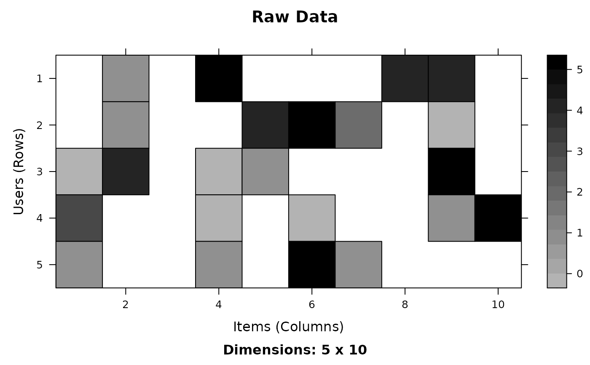
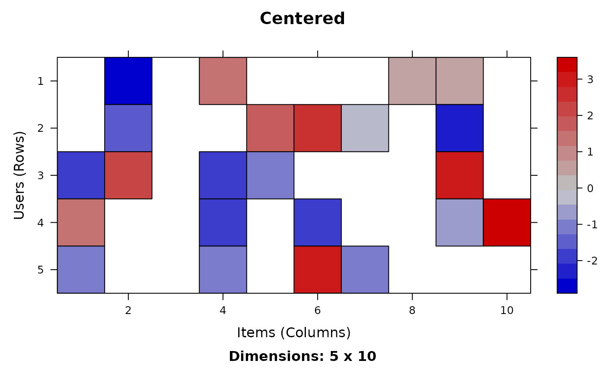
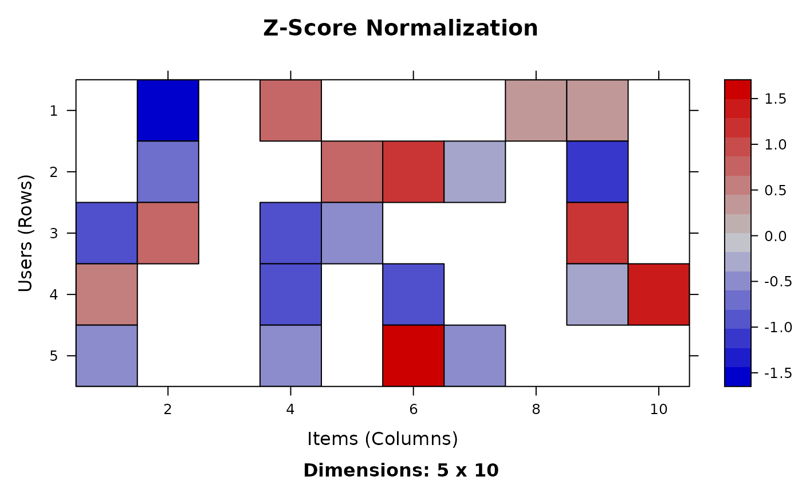

Normalize the ratings
normalize.RdProvides the generic for normalize/denormalize and a method to normalize/denormalize the ratings in a realRatingMatrix.
Usage
normalize(x, ...)
# S4 method for class 'realRatingMatrix'
normalize(x, method="center", row=TRUE)
denormalize(x, ...)
# S4 method for class 'realRatingMatrix'
denormalize(x, method=NULL, row=NULL,
factors=NULL)Arguments
- x
a realRatingMatrix.
- method
normalization method. Currently "center" or "Z-score".
- row
logical; normalize rows (or the columns)?
- factors
a list with the factors to be used for denormalizing (elements are "mean" and "sds"). Usually these are not specified and the values stored in
xare used.- ...
further arguments (currently unused).
Details
Normalization tries to reduce the individual rating bias by row centering the data, i.e., by subtracting from each available rating the mean of the ratings of that user (row). Z-score in addition divides by the standard deviation of the row/column. Normalization can also be done on columns.
Denormalization reverses normalization. It uses the normalization information stored in x unless the user specifies method, row and factors.
Examples
## create a matrix with ratings
m <- matrix(sample(c(NA,0:5),50, replace=TRUE, prob=c(.5,rep(.5/6,6))),
nrow=5, ncol=10, dimnames = list(users=paste('u', 1:5, sep=''),
items=paste('i', 1:10, sep='')))
## do normalization
r <- as(m, "realRatingMatrix")
r_n1 <- normalize(r)
r_n2 <- normalize(r, method="Z-score")
r
#> 5 x 10 rating matrix of class ‘realRatingMatrix’ with 23 ratings.
r_n1
#> 5 x 10 rating matrix of class ‘realRatingMatrix’ with 23 ratings.
#> Normalized using center on rows.
r_n2
#> 5 x 10 rating matrix of class ‘realRatingMatrix’ with 23 ratings.
#> Normalized using z-score on rows.
## show normalized data
image(r, main="Raw Data")

image(r_n1, main="Centered")

image(r_n2, main="Z-Score Normalization")
